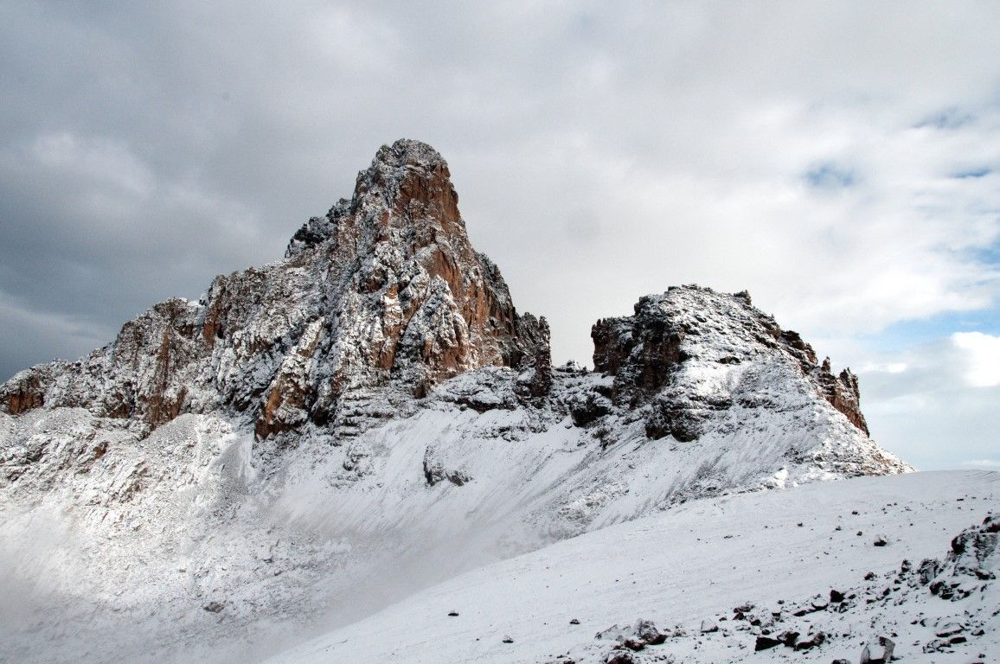
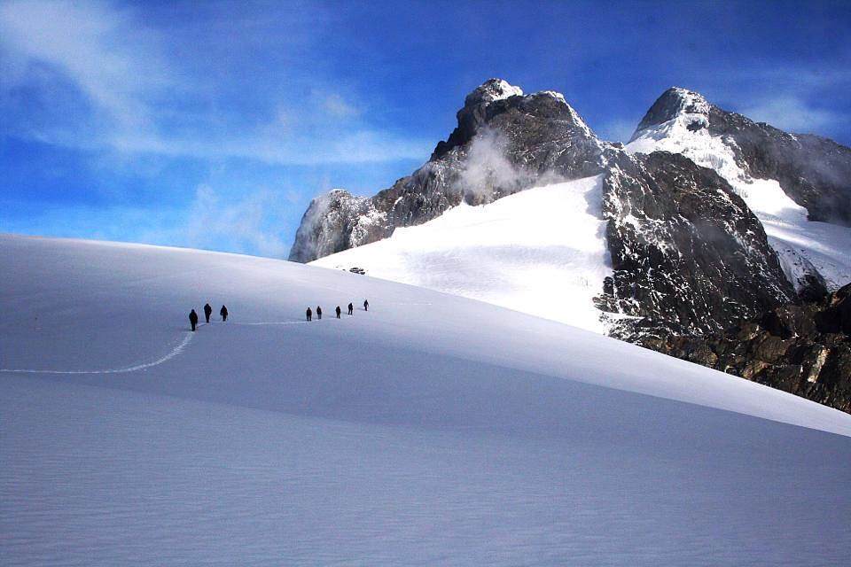
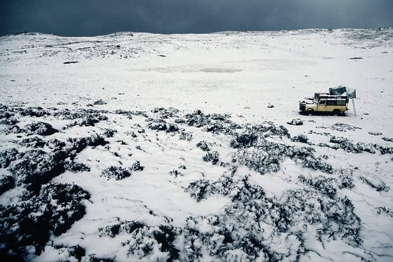
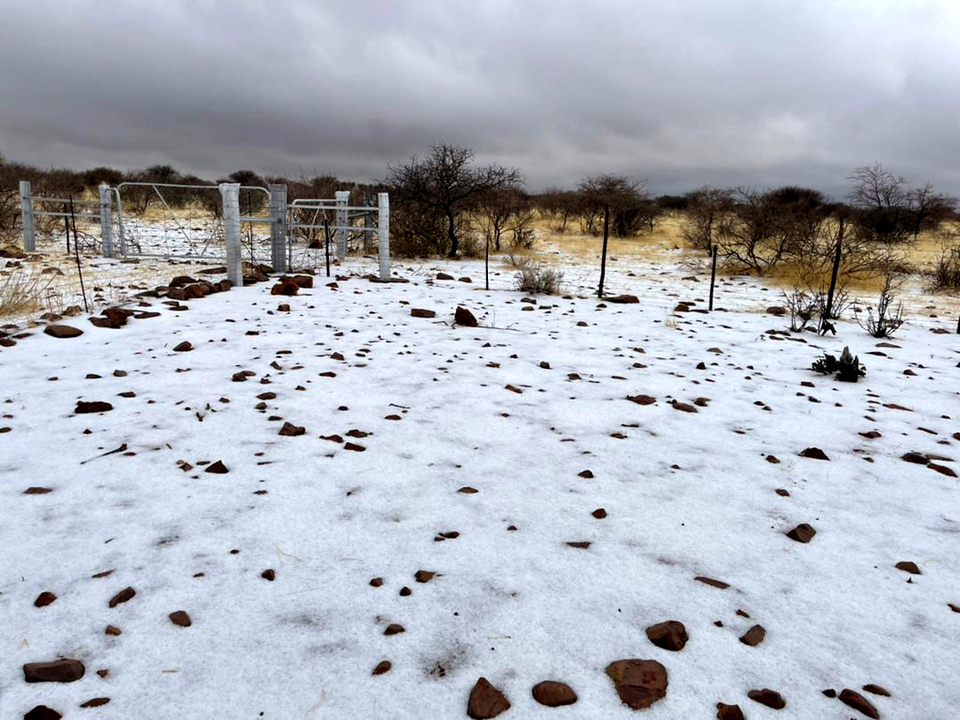

Does It Snow in Africa? Exploring the Snow-Capped Peaks of the Continent
When most people think of Africa, images of sun-drenched savannas, endless deserts, and sweltering heat
come to mind. While these depictions are accurate for many parts of the continent, they miss one
fascinating aspect of Africa’s natural diversity: snow. Africa is home to a variety of climates and
terrains, and snow, while rare, does occur in certain high-altitude areas. From equatorial mountains to
southern highlands, Africa’s snowy spots offer a surprising and unique side to the continent.
In this article, we will take you through Africa’s most notable snow-capped regions, explore where
snowfalls occur, and highlight the best places to experience Africa’s winter wonderland.
Snow in Equatorial Africa: A Surprising Sight Above the Tropics
Contrary to the hot, humid image we associate with the equator, Africa’s equatorial regions also boast some of the continent’s highest peaks, where snow is a seasonal occurrence. These snowy mountains are found in East Africa, where volcanic peaks and ancient mountain ranges stand tall amidst tropical forests.
1. Snow on Mount Kilimanjaro (Tanzania)
Mount Kilimanjaro, Africa’s tallest peak at 5,895 meters (19,341 feet), is located just south of the
equator. This massive free-standing mountain offers a striking contrast: tropical vegetation at the base
and glaciers near the summit. The weather on Kilimanjaro is highly variable, with temperatures
fluctuating dramatically depending on altitude. At the summit, conditions can be harsh, with nighttime
temperatures plunging as low as -29°C (-20°F).
Snow on Mount Kilimanjaro is fed by moist winds from the Indian Ocean, which cool as they rise,
resulting in precipitation that falls as snow on the higher reaches of the mountain. Climbers to the
summit often encounter a mixture of heat, rain, and snow in a single day.
- Best Time to Visit: The best time for climbing is during the dry seasons, from late December to early March and from mid-June to late October, as snow is more likely during this period.
- Notable Considerations: Due to the rapid altitude gain, climbers must be prepared for cold temperatures and unpredictable weather. The glaciers on Kilimanjaro have been receding steadily, and some scientists predict they could disappear within a few decades due to climate change.

2. Snow on Mount Kenya (Kenya)
Mount Kenya, the second-highest mountain in Africa at 5,199 meters (17,057 feet), is also located near the equator, yet its summit experiences regular snowfall. The mountain has 11 glaciers and several snowfields at its peak. Snowfall occurs primarily between March and December, coinciding with the region’s rainy season.
- Snowline:Snow begins at around 4,300 meters (14,108 feet) above sea level, and climbers must ascend higher to experience the snow and view the glaciers in full.
- Best Time to Visit: For those hoping to encounter snow, it is best to visit during the rainy season, but for better visibility of the glaciers, dry months such as January and February are ideal. However, snow will be absent during these months.

3. Snow in the Rwenzori Mountains (Uganda and DRC)
The Rwenzori Mountains, often referred to as the "Mountains of the Moon," span the border between Uganda and the Democratic Republic of the Congo. With peaks that reach up to 5,109 meters (16,763 feet), these mountains are covered in glaciers at their higher elevations. Snowfall begins at around 4,400 meters (14,436 feet) and is most common on peaks such as Mount Stanley, Speke, and Baker.
- Climate and Challenges: The Rwenzori range is known for its fog, rain, and humidity, making climbing here a unique challenge. With up to 300 rainy days a year, the best times to summit are during the dry seasons, typically between June and August and December through February.
- Climate Change Impact: The glaciers here are also retreating rapidly, with predictions suggesting they could vanish within a few decades due to climate warming.

4. Snow in the Simien Mountains (Ethiopia)
The Simien Mountains, with peaks reaching 4,533 meters (14,872 feet), are located in Ethiopia’s northern highlands. While snowfall is rare, it does occur, especially during the cooler months. However, snow usually melts quickly at this altitude, so it is less common than in higher mountains like Kilimanjaro or Kenya.
- Best Time to Visit: If you want to see snow in the Simien Mountains, it’s best to visit during the winter months (December to February), although snow cover may not last long.

1. Snow in South Africa
South Africa is home to several regions where snowfall is a regular winter event:
- Cederberg Mountains: This mountain range, located about 300 kilometers (186 miles) north of Cape Town, experiences heavy snowfalls in winter, particularly on its higher peaks. Though the region is known for dry, hot summers, winter brings a stark contrast with snow-capped peaks.
- Sutherland:Known as one of South Africa’s coldest regions, Sutherland sits at an elevation of 1,458 meters (4,783 feet). Snowfall is most common between June and August, with temperatures often dipping below freezing.
- Drakensberg Mountains: The Drakensberg, which forms the eastern escarpment of South Africa, frequently experiences snow during the winter. At the Tiffindell Ski Resort, visitors can enjoy skiing and snowboarding from June to August.

2. Snow in Lesotho
Lesotho is one of the few African countries where snow is a more regular occurrence, thanks to its high-altitude location. Over 80% of the country lies above 1,800 meters (5,900 feet), and snowfalls are common from May to September, with some areas receiving snow almost year-round.
- Afriski Resort: Located at 3,222 meters (10,571 feet), Afriski is one of southern Africa’s premier ski resorts, offering opportunities for skiing and snowboarding during the winter months.
3. Snow in Namibia
Namibia’s dry, sunny climate is world-renowned, yet snow has been recorded in some of its higher-altitude regions. Though snow is rare, the last snowfall occurred in June 2022, highlighting how even the arid country can experience unusual weather patterns.

Snow in Northern Africa: A Desert Surprise
While much of northern Africa is known for its dry, desert climate, certain mountainous regions do receive snow during colder winters. Snowfalls are rare but not impossible in countries like Tunisia, Morocco, and Algeria.
1. Snow in Tunisia
In Tunisia, the highest mountains, such as Jebel ech Chambi and Djebel Zaghouan, can experience snow during the winter. While snow is not common in the desert, the country’s mountainous regions have experienced a few notable snowfalls, including one in January 2022.
2. Snow in Morocco
The Atlas Mountains in Morocco are well-known for their snowfalls, particularly in the High and Middle Atlas ranges. The town of Ifrane, which is often referred to as “Morocco’s Switzerland,” is known for its Alpine-style architecture and regular snowfall.
- Oukaïmeden Ski Resort: Situated at 2,600 meters (8,530 feet), Oukaïmeden is one of Morocco’s most popular ski resorts, offering a unique opportunity to ski in Africa.
3. Snow in Algeria
Snow is rare in Algeria but can occur in the Small Atlas Mountains. The higher elevations in this region occasionally experience snowfall, especially during particularly cold winters.
The Impact of Climate Change on Africa's Snowy Regions
As Africa faces rapid climate change, the effects are particularly noticeable in its mountainous regions. Glaciers on Mount Kilimanjaro, Mount Kenya, and the Rwenzori Mountains have been retreating for decades, and some scientists predict they may vanish entirely within the next few decades. The rising temperatures across the continent are leading to unpredictable weather patterns, making it difficult to forecast snow conditions.
Discovering Africa’s Snow-Capped Peaks
Though snow is not a widespread phenomenon across Africa, the continent offers some breathtaking snowy landscapes in its highest regions. From the towering peaks of Kilimanjaro and Mount Kenya to the remote mountains of Lesotho and the Rwenzori range, Africa’s snowy spots provide a stunning contrast to the more commonly associated hot and dry image of the continent. For adventurers seeking a rare and unique experience, visiting these snowy peaks offers a chance to see a different side of Africa—one where tropical forests meet icy heights, and where climate change is visibly reshaping the landscapes.